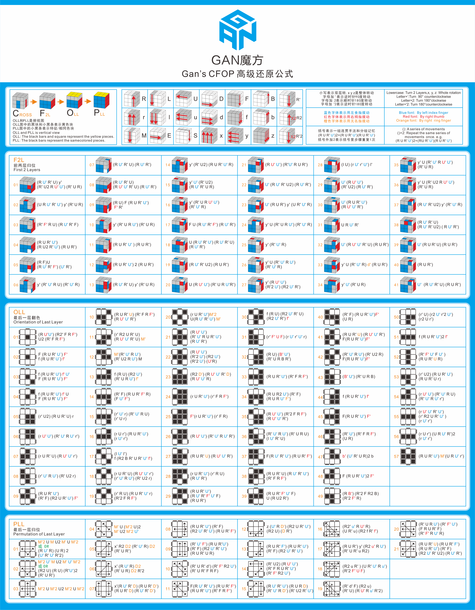

<h1>CFOP Method & Beyond CFOP Algorithms</h1>
<h2>Full CFOP Algorithms from GANCUBE</h2>
  
<h2>Full CFOP Algorithms from Cubeskills</h2>
  <h3>F2L</h3>
   <iframe src="files/F2L.pdf" width="1500px" height="1500px" frameborder="2" scrolling="yes"></iframe>
  <h3>OLL</h3>
   <iframe src="files/OLL.pdf" width="1500px" height="1500px" frameborder="2" scrolling="yes"></iframe>
 <h3>PLL</h3>
  <iframe src="files/PLL.pdf" width="1500px" height="1500px" frameborder="2" scrolling="yes"></iframe>
